.png)
Voici la fenetre principale du programme en developpement.
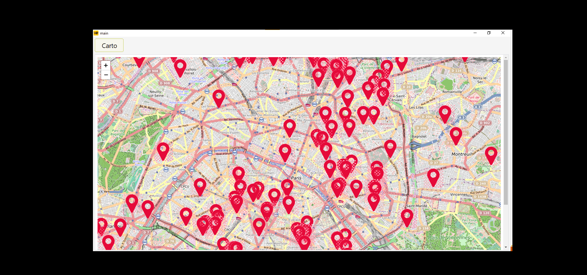
Ceci est le premier test réussis avec les données de la BDD.
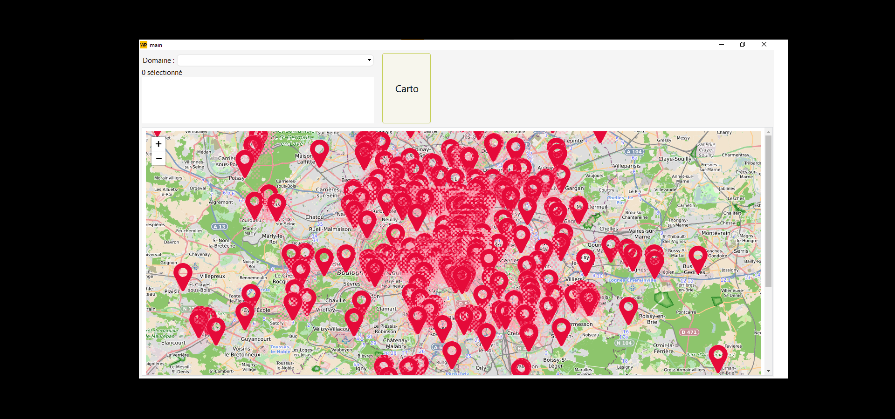
Le premier filtre ajouté. Ce filtre, sert a filtrer les formation selon le formacode 3.

Demonstration du résultat de l'affichage de la carte avec plusieurs filtre séléctionnés.

Démonstration du résulat de la carte et du tableau.
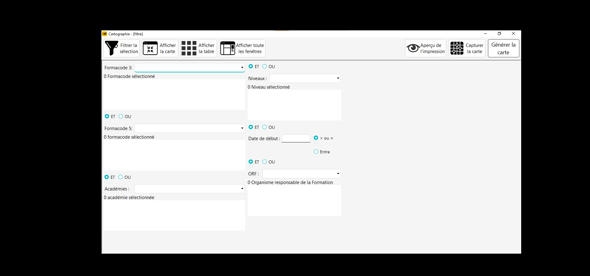
Création d'une fenetre filtre.
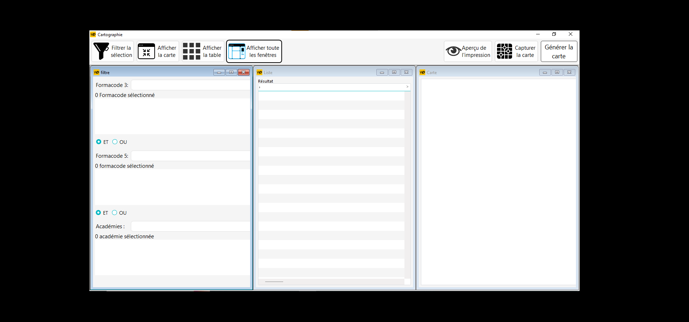
Ajout d'un bouton qui permet de partagé l'espace de la fenetre mère.

Ajout de couleurs selon les académies.

Ceci est la partie du code, qui permet d'exécuter la requête SQL.
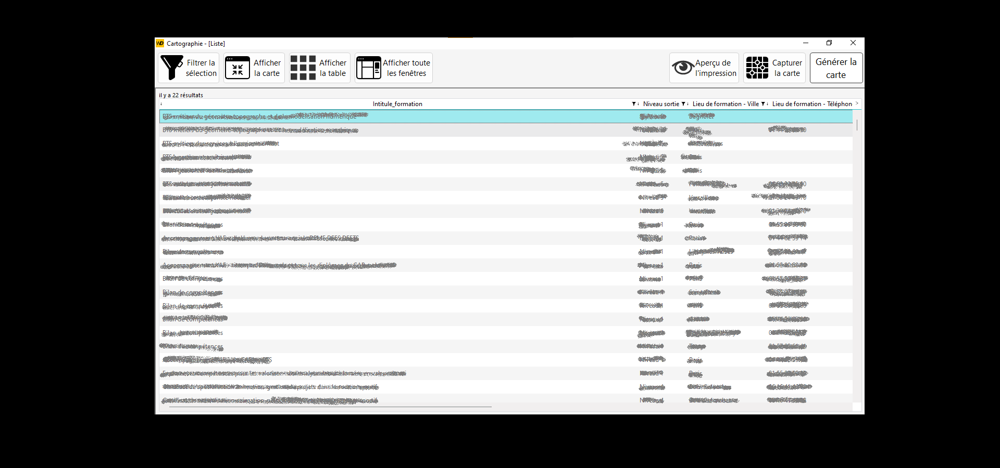
Démonstration du résulat de la reqête dans la table.

Cette fonction, permet d'assembler les filtre qu'on a choisi,
et de les concatener de façon a ce qu'il soit interpreter dans la clause WHERE de la requête SQL.

Ceci est un Etat(le nom du coposant WINDEV), il sert a générer un PDF selon les information de la requête.
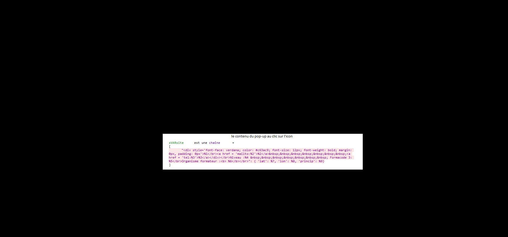
Cette variable sert a créer la popup.
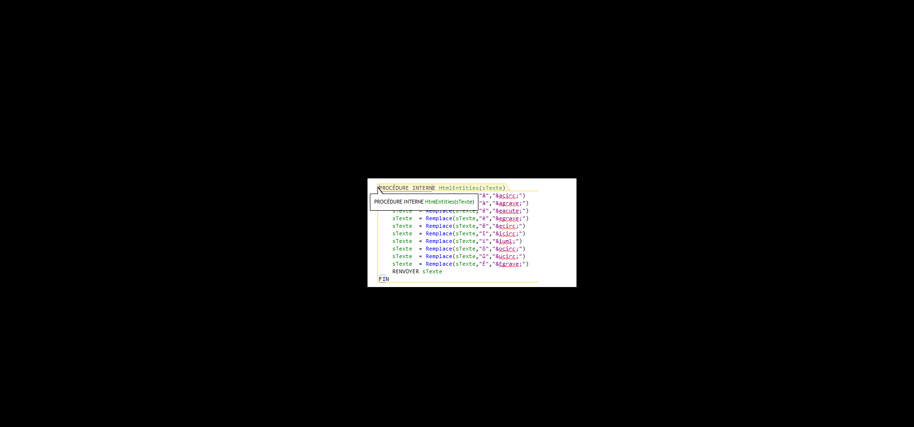
Cette fonction sert a remplacer certain caractère qui ne sont pas compris, par le HTML, il sont remplacer par leurs nom HTML.
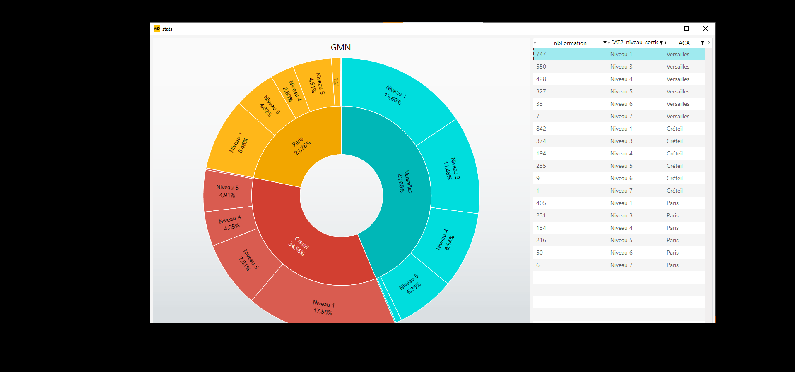
Ceci, est une fenetre statistique, qui permet d'afficher selon le résultat de la requête,
les pourcentages des formations selon les niveaux de sortie des formations, les académies etc...
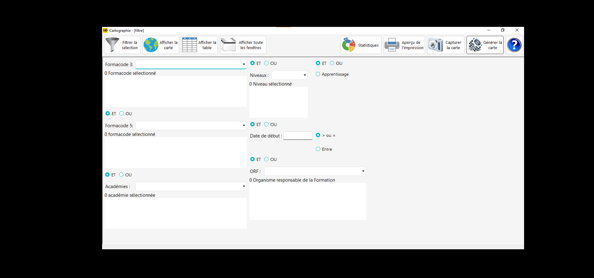
Ceci est l'apperçu, après l'ajout de tous les boutons, pour chacune des fonctionnalités.
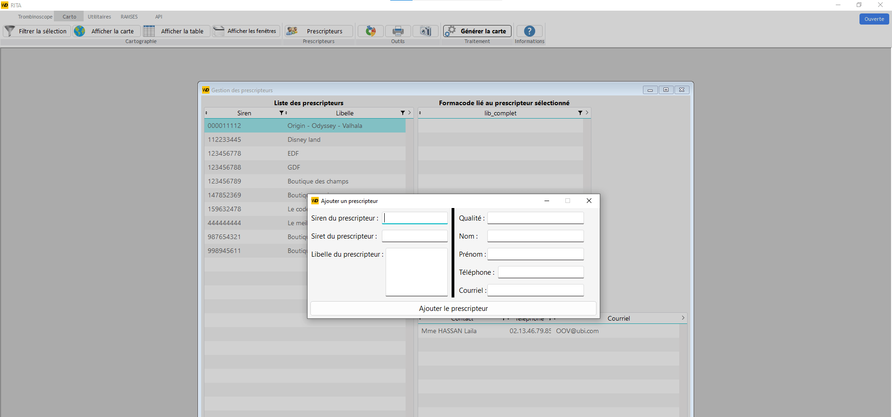
Dans cette fenêtre on peux ajouter un prescripteur (Client), qu'on pourra ensuite rattaché à un formacode.
Elle va permettre de se constituer une base de données clients.
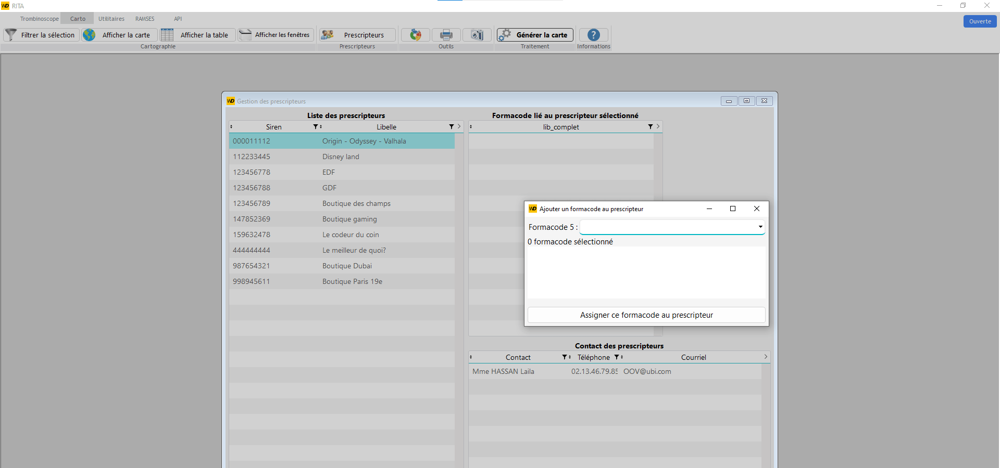
Démonstration de l'assignation d'un formacode à un prescripteur.
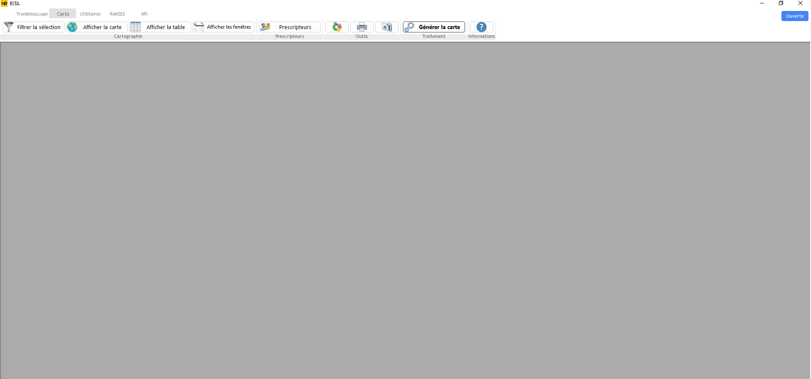
Ceci est le résultat de l'integration de mon travail, sur une application qui était en production.
Le travail d'intégration a pris un peu plus qu'une journée.
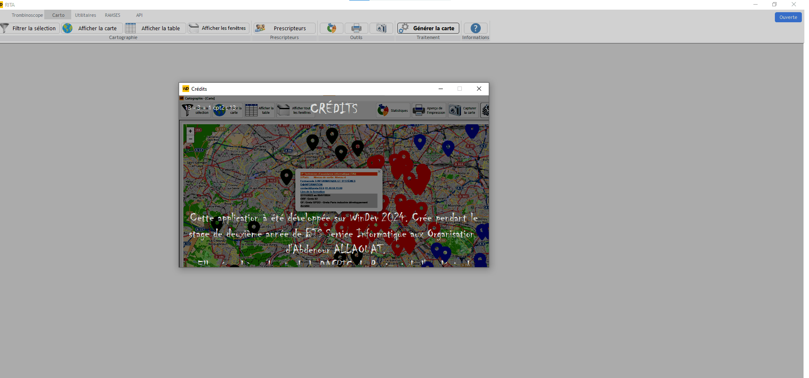
Ceci est une fenetre de remerciements, créé vers la fin de mon stage, afin d'apprendre à utiliser les composant multimédia de WINDEV.